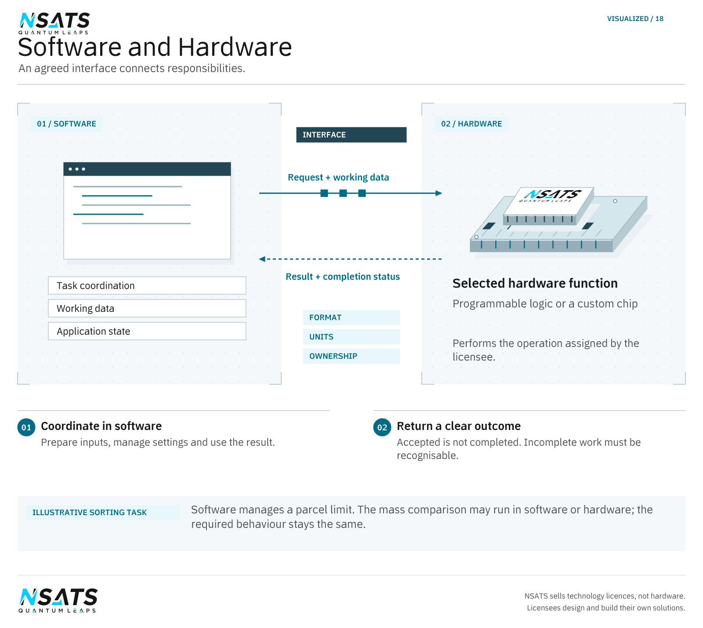

The application and its operations
A computing task receives information, performs operations and supplies a result to an application. The implementation decides which work runs in software and which functions sit in hardware. Memory and transfers are part of that division: an operation needs its inputs, and its result must reach the next stage of the task.
An application requirement describes the behaviour needed from the system. An implementation describes the means chosen to provide it.
A requirement can state what should happen when an input arrives and what result is acceptable. These are observable behaviours. They can be agreed before deciding whether a particular function will run as instructions on a processor or as hardware logic. A change to the implementation should still satisfy the same required behaviour.
A task also has boundaries between functions. A function that calculates a value is distinct from the function that decides when to request that calculation. Keeping these responsibilities explicit determines which information each part needs.
In an illustrative sorting machine, a program reads a parcel’s mass and compares it with an acceptance limit. The comparison could run in software or hardware, while software manages the limit and displays the decision. Either arrangement must interpret the mass and limit in the same units and report the same condition. The placement changes; the application requirement does not.



Assign functions to software and hardware
Software can coordinate a task and connect it to an application. Hardware can carry out selected operations within the device. Deciding where a function belongs involves its processing needs, interfaces, memory use and the changes a developer expects to make. Different applications can lead to different divisions of work.
A licensee can favour an alterable implementation when a function is expected to change.
Software expresses behaviour as instructions that a processor executes. An update changes those instructions, subject to the device’s update process and the interfaces other components expect.
In ordinary programmable hardware, a logic configuration is a set of settings for arranging the device’s configurable logic and connections to perform a function. Loading it establishes the hardware behaviour to use. This differs from a program that asks a processor to execute operations in sequence: the configuration determines the logic arrangement that carries out the selected work.
A function fixed in a custom chip is embodied in the circuit made during manufacture. Software may still supply different inputs or settings, but those changes do not remake that fixed circuit. A licensee deciding between these forms should distinguish behaviour that needs to change after installation from a function it intends to keep fixed.
The division also determines who owns a value while work is in progress. If software supplies data for another component to process, the design must specify whether software can change that data before the operation finishes. These agreements belong to the division of responsibility, alongside the calculation itself.
A licensee can identify the functions likely to change, the settings users need to control and the behaviour that must remain stable. It can then specify which updates must be possible on installed equipment and which changes would require replacing a component. Those requirements constrain the implementation independently of the function’s mathematical description.
Compare implementation choices
Compare the hardware routes against the needs of the system:
- Programmable hardware: the design can be changed during development.
- Custom chip: more of the design is fixed into a particular implementation.
- Questions for both: integration, verification, power and development effort; they help a licensee choose the route relevant to its system.
In an ordinary hardware project, verification checks the implementation against its required behaviour. A change to a function can require its checks to be repeated and its interfaces to be examined again. The development work includes preparing the checks and identifying the expected outcomes, as well as producing the implementation. A component’s test inputs should represent the work the surrounding application will actually request.
Power requirements concern the component within its operating equipment. The design must account for the supply available, the activities occurring together and how heat leaves the enclosure. A comparison that considers only the calculating function omits the resources used by its connections and surrounding components. The application’s operating pattern belongs in that assessment.
A licensee can prepare a common set of required behaviours for the alternatives it considers. It should also record differences in the surrounding system each alternative needs, such as a changed software interface or an added connection. An implementation choice can affect those dependencies even where the requested calculation stays the same.
Interfaces between software and hardware
An interface defines the information that passes between two parts of a system. Software may supply a request and its working data, while hardware returns a result for the application to use. Co-design considers these exchanges alongside memory use and processing responsibilities, so that the parts support the same task. NSATS licenses the intellectual property for the chosen implementation scope. NSATS sells technology licences, not chips. Its technology helps licensees manufacture their own chips.
In ordinary hardware and software co-design, the two parts are specified together against the same application task. A designer can consider a hardware function alongside the software that prepares its inputs and uses its result, then revise the division of work as either design develops. This can expose a required software change before the hardware design is fixed, or a hardware requirement that the program alone cannot meet.
An ordinary interface specification states the meaning and format of each input and result. It includes units, permitted values and how a request identifies the work it refers to. A component receiving a value must interpret it as the sender intended; transferring the value alone does not establish that agreement.
The interface specification also defines the sequence of exchanges. The receiving component may need a setting before it accepts the data to which that setting applies. The calling software needs to know whether a response means that a request has been accepted or that its work has finished. An incomplete operation also needs an outcome the application can recognise.
For a design discussion, a licensee can supply the existing request formats and the components using them.